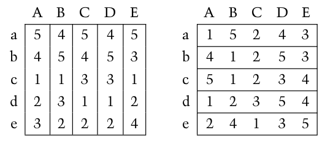

Midterm Exam
Contents
FIZ371 - Scientific & Technical Calculations | 06/12/2023
Emre S. Tasci mailto:emre.tasci@hacettepe.edu.tr
Eng. Physics Dept.
Hacettepe University
Ankara, Turkey
Midterm Exam¶
You can solve the problems analytically or stochastically, it’s up to you. You can present your solution having been calculated on a paper, or as a jupyter notebook, or as a mixture of both.
Please prepare one jupyter notebook per question.
You can use any predefined function from numpy, scipy, math, pandas, random, collections and matplotlib modules – for any other external module/library you should first ask for permission.
Before submitting, download your notebooks as html as well as ipynb format and zip them all.
Name your zip file as <YourName>_FIZ371_20231_MT.zip (e.g., EmreTasci_FIZ371_20231_MT.zip)
Pick 4 out of the following 5 questions!
1. Probabilities¶
A bag holds the following letters, some more than once as you can see:
S = ['a', 'c', 'c', 'c', 'f', 'g', 'h', 'i', 'm', 'n', 'n', 'o', 'p','s', 's', 't', 'u', 'y', 'y', 'z']
a) What is the probability that randomly picked 5 letters will spell the word ‘scout’? (The picking is with replacement, i.e., after being picked up and taken note of, the picked letter is returned back to the bag)
b) What is the probability that from randomly picked 10 letters we will be able to spell the word ‘scout’? (The picking is with replacement)
c) Calculate and plot the probabilities chart/graph of the letters being picked.
d) Calculate the entropy of this system.
2. Random Passenger¶
There is a plane with 100 seats and 100 passengers are starting to board it one by one. The first passenger realizes that they have lost their ticket so they sit to a random seat. The following passengers pick a seat according to these rules:
If their assigned seat (i.e., the seat with the number that is on their ticket) is available, they sit there,
If their assigned seat is occupied, they randomly pick an unoccupied seat and sit there.
Calculate the probability that the last passenger will actually be able to get their assigned seat.
3. Continous Distribution¶
a) Draw (pick) N = 1000 samples from the Gaussian distribution characterized by 𝜇=5,𝜎=2. Plot the probability distribution using these samples you have obtained.
b) Without using the knowledge of the 𝜇,𝜎 parameters you have used to generate the data, try to recover 𝜇,𝜎 from the samples! (i.e., fit a Gaussian to your data’s distribution ;)
c) (Bonus) Try to calculate the area under the curve for various group sizes (Δ𝑥 values). Are they all equal to 1? If not, what do you propose to make the area equal to 1?
4. Game Theory¶
Calculate the probabilities for defecting and keeping silent for the prisonner’s dilemma game, using the pay-off table below:
Find the Nash equilibrium point(s), if any.
5. Matchmaking¶
Consider the following preference chart:

where capital letters indicate the women and lower cases indicate men.
a) Find a stable matching.
b) Is the matching you have found unique? If so, why? If not, find another alternative & stable matching.